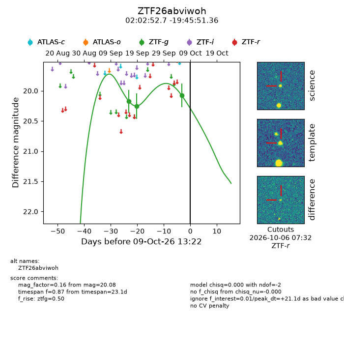
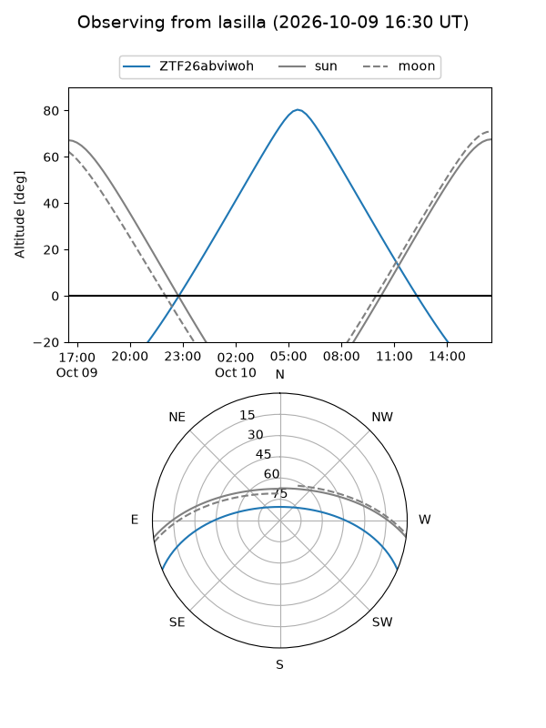
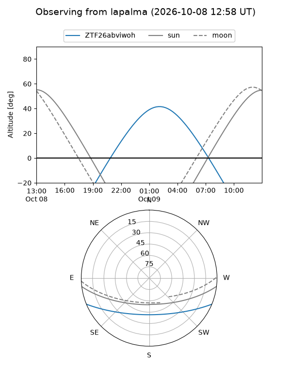
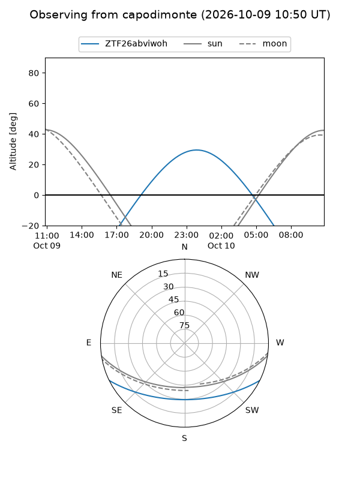
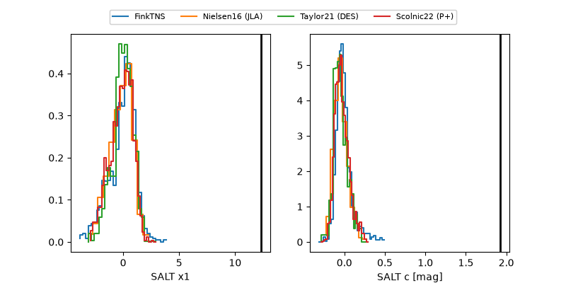

ZTF26abviwoh
Target ZTF26abviwoh at 2026-10-09 13:25
Aliases and brokers:
FINK-ZTF: ztf.fink-portal.org/ZTF26abviwoh
Lasair-ZTF: lasair-ztf.lsst.ac.uk/objects/ZTF26abviwoh
ALeRCE-ZTF: alerce.online/object/ZTF26abviwoh
Direct TNS query: direct search
alt names
ZTF26abviwoh (ztf,fink_ztf)
Coordinates:
equatorial (ra, dec) = 30.7195,-19.76427
equatorial (HMS+DMS) = 02:02:52.68,-19:45:51.36
galactic (l, b) = (192.5052,-72.06170)
Flags:
peak dt: +21.1
Photometry:
last ztfg=20.08
3 ztfg detections
Lightcurve

Visibility



Additional plots
